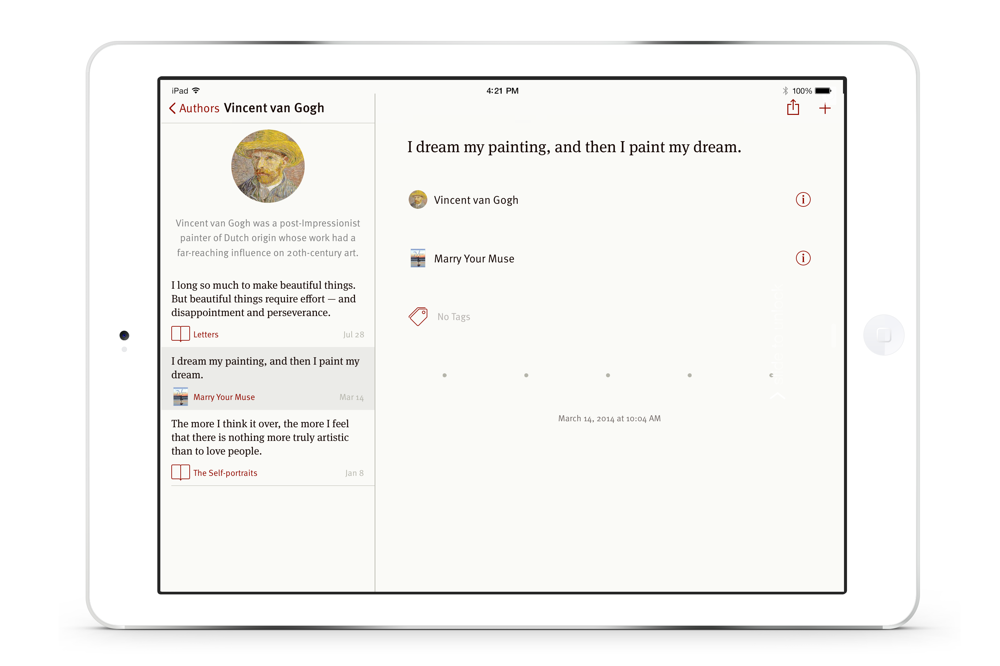
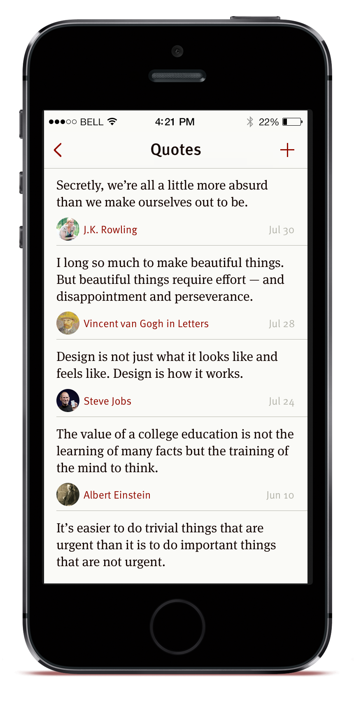

Writers use Quotebook to record and organize quotes to use for their work. They can also easily discover quotes from the app.
Everyone can use Quotebook to keep track of quotes that friends and family around them say.
Students can use Quotebook to find quotes for papers. Information about authors and sources is automatically downloaded from Wikipedia.